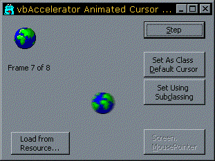

vbAccelerator Animated Cursor Classes Sample (39K)
vbAccelerator Animated Cursor Classes Sample (39K)
 1 Jul 1999
1 Jul 1999
First Posted
 Subclassing Without The Crashes
Subclassing Without The Crashes
 Using Animated Cursors in .NET
Using Animated Cursors in .NET

Animated Cursors in VB
Give your users something to look at when your program is doing nothing!
Nice feature in Office - you can set it to show customised animated cursors. For example, when Office is opening a document the cursor switches to an animation of a yellow handbag throwing up a small piece of paper (I think that's what it is, anyway).
It would be nice to do it this in VB too, yes? Well, as ever with graphics support in VB, you can't do it with the standard methods. The bizarre MouseIcon property lets you set a custom cursor, but this is yet another low quality workaround for the limitations of the Picture object and so it doesn't work with colour or animated cursors.
But with the aid of a few hardcore hacks you can make VB show cool animated cursors. A rather dismal collection of animated cursors is included with the sample, you can get more from the Animated Cursor section of the Graphics Library.
This is Easy, Yes?
The easy bit is to get VB to load and draw an animated cursor. This is achieved using the multi-talented Win32 LoadImage and DrawIconEx functions. These functions are poorly supported in the Win32 API text supplied with VB5, as they are given with misleading declares and also all the constants you need to use them are missing. The proper declares and constants are in the cAniCursor class, which wraps up these methods to provide an easy to use class for loading animated or standard cursors from files or resources, managing cursor handles and also drawing any frame of a cursor.
When I Said 3 Lines of Code, I Underestimated
Its a bit more tricky to persuade VB to show your cursor like a standard mouse pointer. VB is very secretive about how it implements cursors and so you must guess how it does it. My code shows two different ways of setting the cursor for a control or form and also a rather brute force method of setting the cursor so it emulates VB's Screen.MousePointer.
Setting the cursor for a form or control can be achieved in two ways:
- Modifying the Win32 Class Cursor for the window
- Subclassing the WM_SETCURSOR message and using the SetCursor call to apply your own cursor.
The first method is the simplest, but intercepting WM_SETCURSOR gives you more flexibility. A limitation which applies to both methods is that the method only works directly for objects which have a hWnd property. Labels, Images, Shapes and Lightweight controls are drawn directly onto their parent window handle. If you need control to detect whether the mouse is actually over a lightweight control you must use the subclassing method, because the class cursor method applies to the entire window, whereas the WM_SETCURSOR message is fired whenever the mouse is moved and so you get the opportunity to change what you set depending on where the pointer is.
Setting the cursor using the class cursor method is supported directly in the cAniCursor class. Subclassing a form or control to set the cursor is supported by the cCustomCursor class.
To emulate VB's Screen.MousePointer method is more difficult. In effect what you want to do is to apply either of the two methods which apply to a single form or control to every form and control in your VB project. That means quite a bit of work! It would be possible to enumerate all the windows and their children in your project and then set the class cursor for each to the same thing, or to apply a subclass to every one. However, a simpler way of achieving this effect is to use a Windows Hook. There are various types of Windows Hooks, the one used here is the WH_CALLWNDPROCRET hook. This hook is called for every single window in your process whenever windows calls that Window's WndProc function (i.e. the function you normally trap when you subclass a window). So using this hook we can emulate applying a subclass on every window in your entire project at once!
The only downside of using this hook is that it can slow down performance of your application when it is in place. However, since you normally want to show a Screen.MousePointer when your application is busy doing something, this usually isn't an issue. Your app blocks WndProc calls whilst it is actively doing work so there is no performance impact.